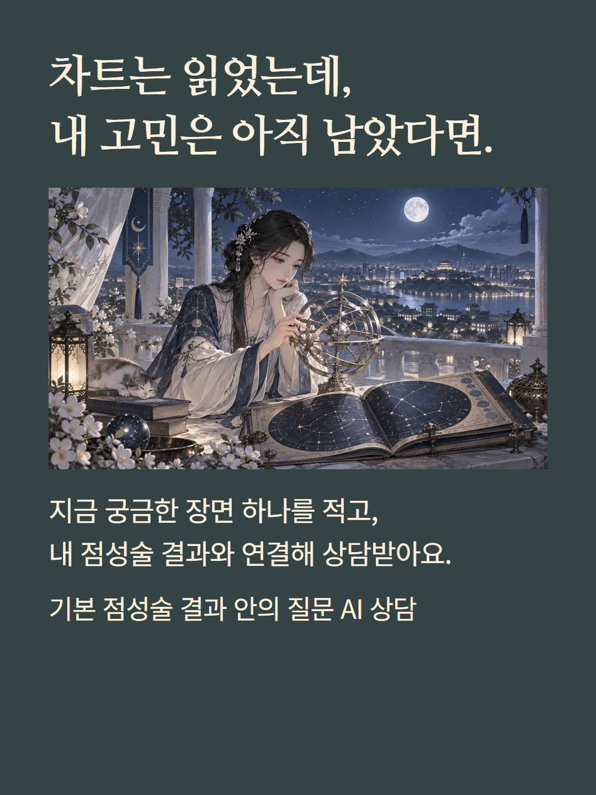
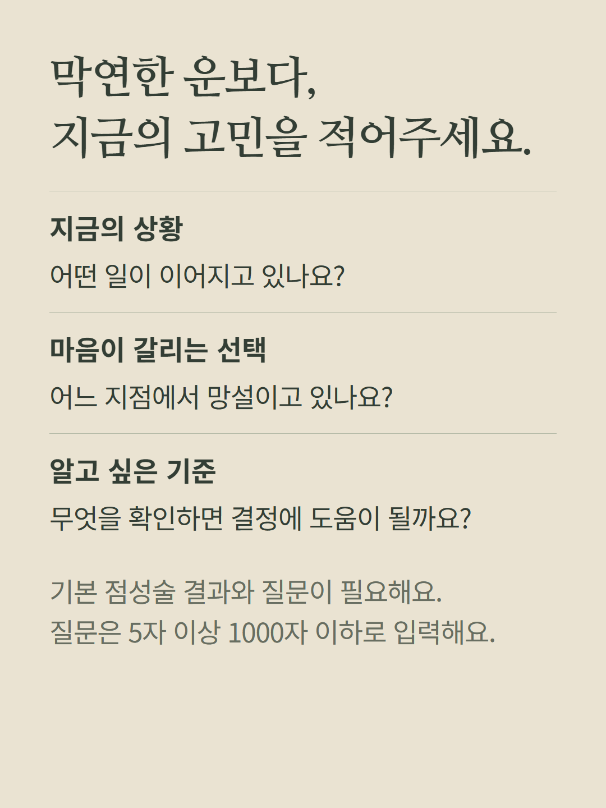
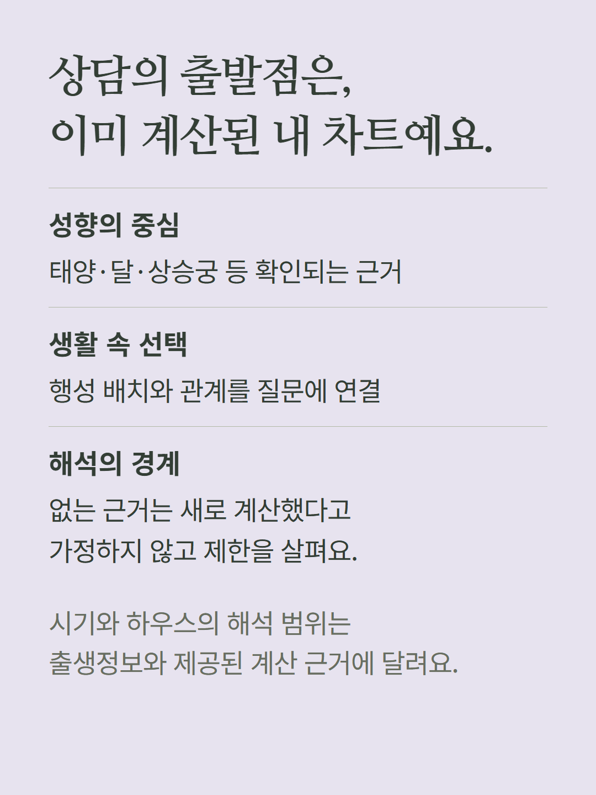
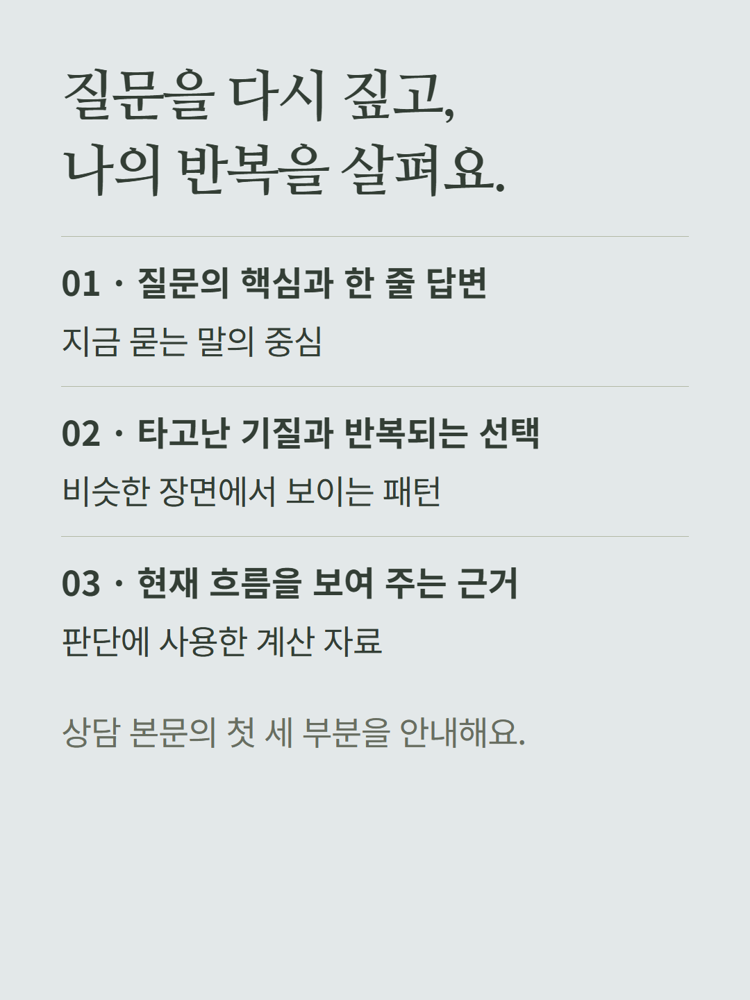
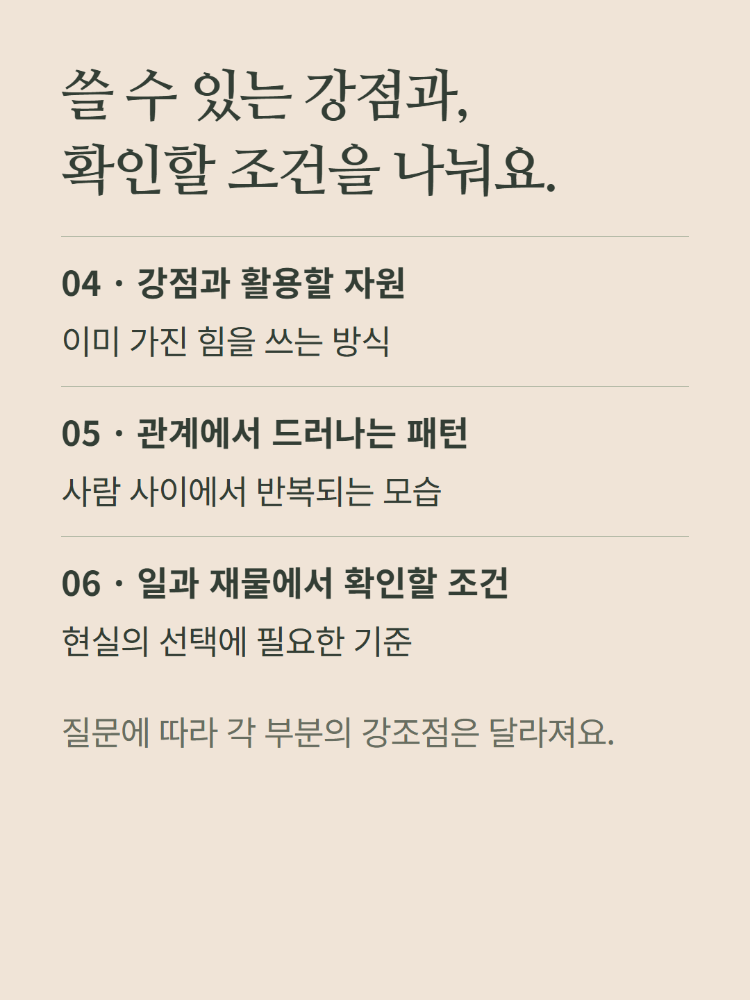
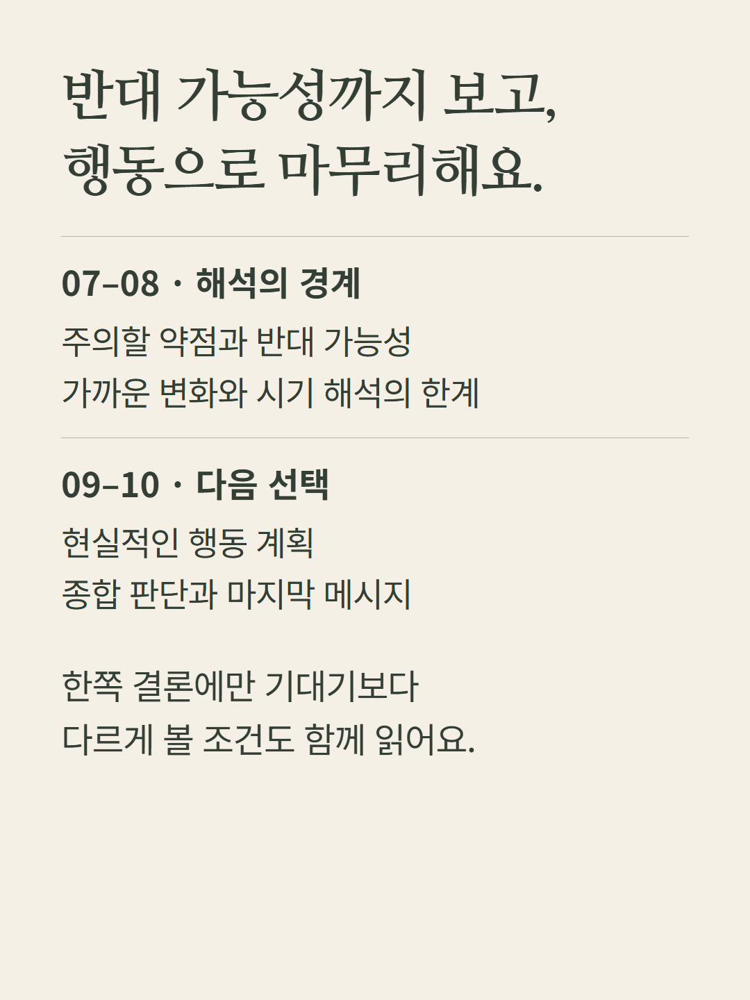
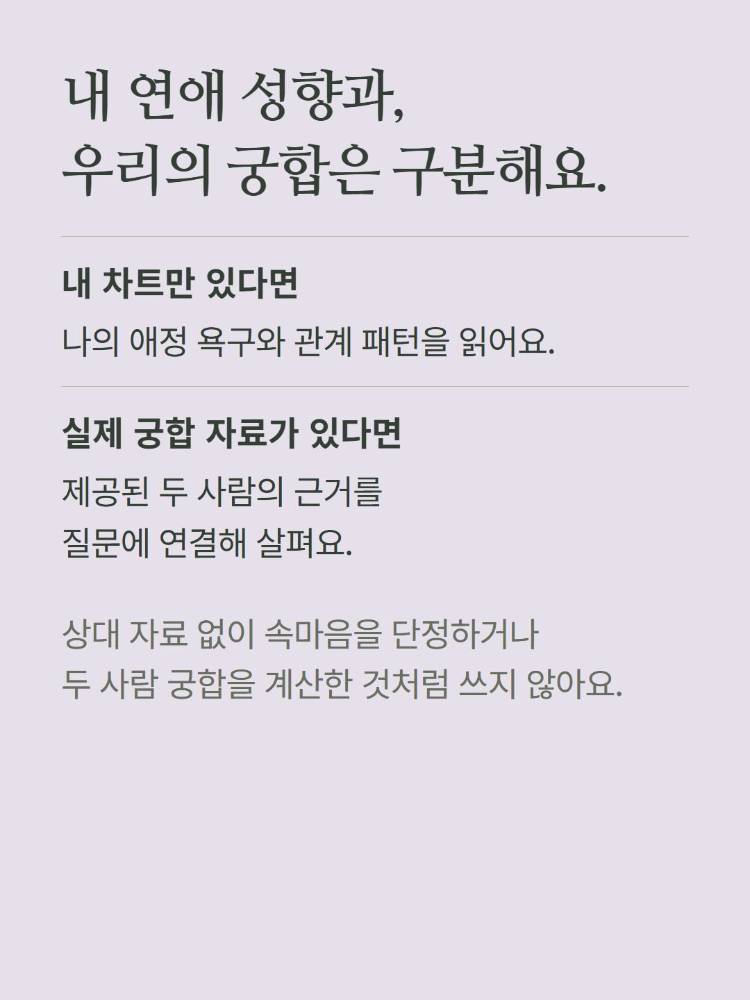
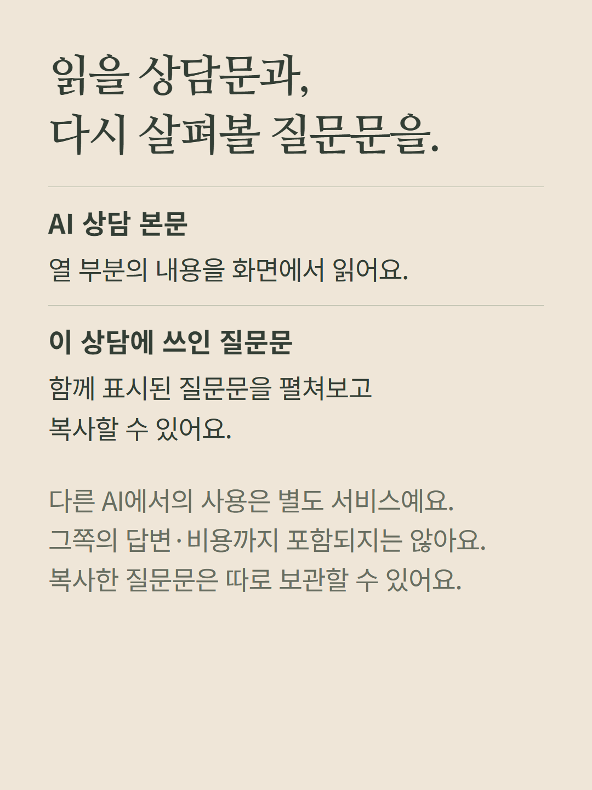
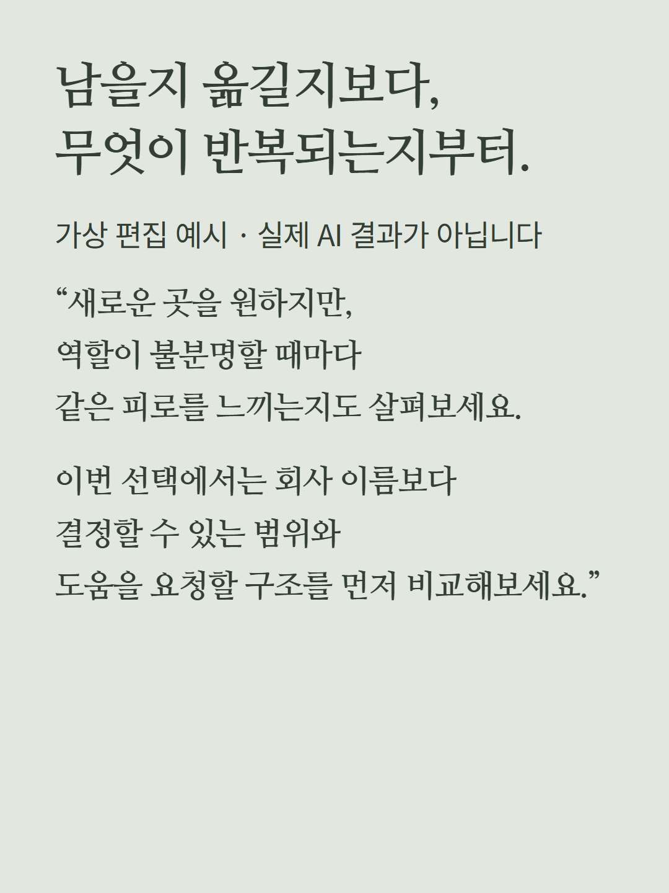
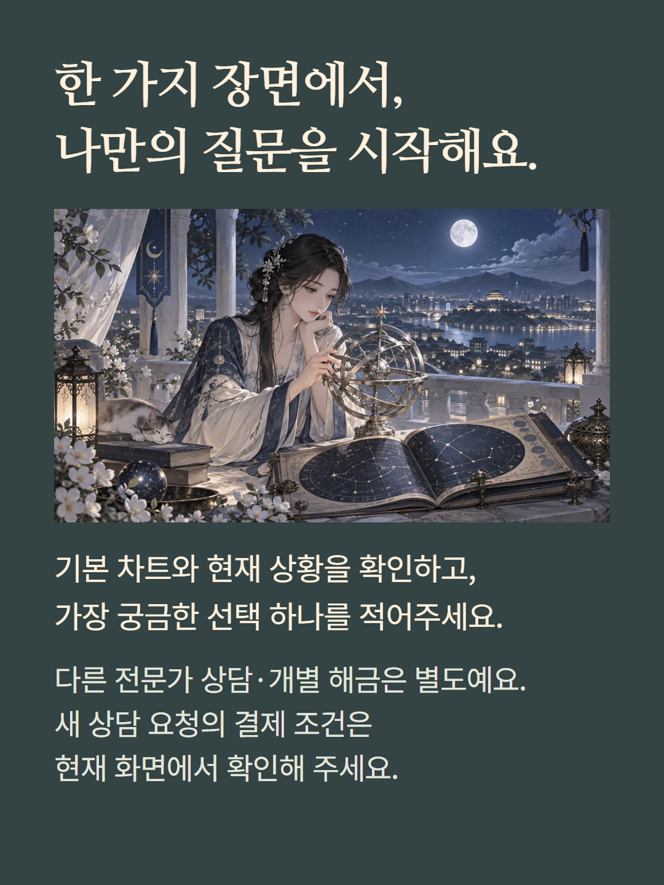

기본 점성술 결과에서 질문을 입력해 AI 상담문을 받는 기능입니다. 열 부분의 상담 본문과 상담에 사용된 질문문을 함께 살펴볼 수 있습니다. 기본 결과와 5~1000자의 질문이 필요합니다. 궁합 데이터가 있을 때만 해당 두 사람의 근거를 사용합니다. 다른 전문가 상담·차트 패키지·트랜짓 해금은 별도입니다. 상담 내용은 질문과 계산 근거에 따라 달라집니다. 예시는 가상 편집입니다. 가격과 결제 조건은 현재 화면을 따릅니다.